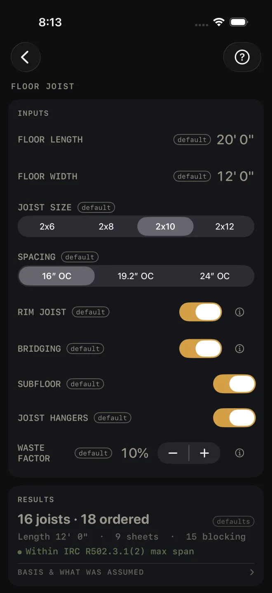
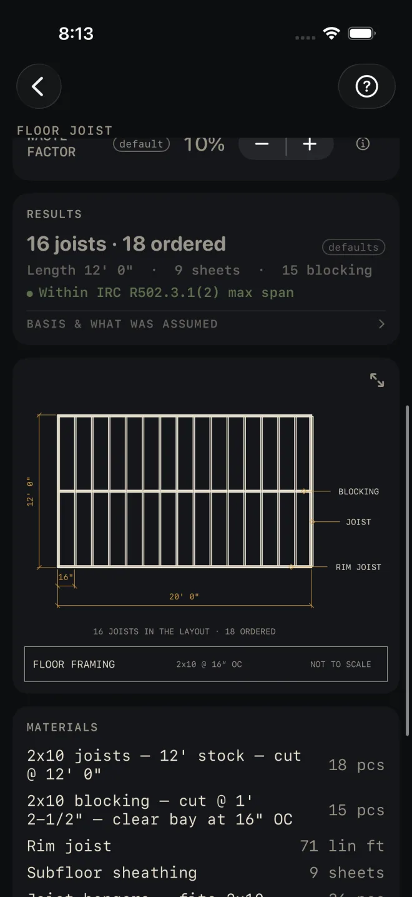

Floor Joist
What it's for
Framing a floor with sawn lumber joists. You give it the floor size, the joist size and the spacing, and it gives you the joist count, the number to order, the joist length, subfloor sheets, blocking, a framing plan and a material list. It checks the joist's span against the IRC floor joist span table and flags a joist that is too small for the span.
Step by step
This example uses the numbers the screen opens with.

1 2 3 4 5- FLOOR LENGTH — the side the joists are laid out along. The spacing steps off down this side. The example is 20' 0".
- FLOOR WIDTH — the direction the joists run. This is the joist length and the span that gets checked, so enter the distance the joists actually span. The example is 12' 0".
- JOIST SIZE — 2x6 to 2x12.
- SPACING — on center.
- Four switches add rows to the material list. RIM JOIST is the joist on edge across the joist ends. BRIDGING is the blocking between joists at mid-span. SUBFLOOR is the sheathing. JOIST HANGERS are the hangers.
- WASTE FACTOR — the extra you buy over the measured quantity.
- Read the answer: 16 joists · 18 ordered, with a green span line under it.
Reading the results

1 3 4 5 6- The headline has two counts. The first is the joists in the layout. The second is the number to order, with the waste factor in it.
- The line under it gives the joist length, the subfloor sheets and the blocking pieces.
- The span check. Green means the joist size is within the table at this spacing. A SPAN EXCEEDS MAX line gives the longest span that joist size allows at that spacing. Go up a size in JOIST SIZE, tighten SPACING, or shorten the span with a beam or a bearing wall under the floor and enter the shorter span as FLOOR WIDTH.
- BASIS & WHAT WAS ASSUMED — tap it. It names the table, and the species, grade, floor loads and deflection limit the table was read for. It notes that another common species spans a little less. It also gives the length the blocking is cut to. Check the species and grade against the stamp on your lumber.
- The drawing is the floor in plan: joists at their spacing, the rim, the blocking line, and the two counts under it. Pinch to zoom, drag to pan, double-tap to reset. The expand button opens it full screen. See Reading the drawing.
- MATERIALS — joists at the order count, blocking, rim joist in lineal feet, subfloor sheets and hangers. A switch you turned off takes its row out.
Under the list, CUT SHEET, the list icon at its right end, CUT LIST and SEND LIST stay dim until you change at least one input. SAVE stays lit, but while every input is still a default a tap only answers Enter your job's numbers first and saves nothing. CUT SHEET makes a PDF, the list icon at its right end shares the material list only, SAVE keeps the result in History, CUT LIST puts the list on the Lock Screen and SEND LIST sends a checkable list to another phone.
Common mistakes
- Swapping length and width. The joists run across FLOOR WIDTH. If yours run the long way, enter the long side as the width. The drawing shows which way they run.
- Entering the whole building width over a center beam. The span that gets checked is FLOOR WIDTH. With a beam or bearing wall under the floor, run each side as its own floor.
- Ordering the first number. The first count is the layout. The second has your waste in it.
- Taking the green line as the last word. The table is for one species, grade and loading. Open BASIS & WHAT WAS ASSUMED and compare. For I-joists use TJI Joist Guide.
Related
- TJI Joist Guide
- Beam Sizing — for the beam under the floor
- Deck
- Plywood
- Reading the drawing
- Cut sheets and 1:1 templates
- Cut list on the Lock Screen
- Saving and History